基于QT、VTK的三维数据可视化模块
VTK三维数据可视化模块说明文档
简介
基于 Qt、VTK 的三维数据可视化模块，提供了一个高性能的交互式三维渲染窗口，专门用于展示地质勘探、气象数据及通用科学计算数据。
界面展示
程序主页
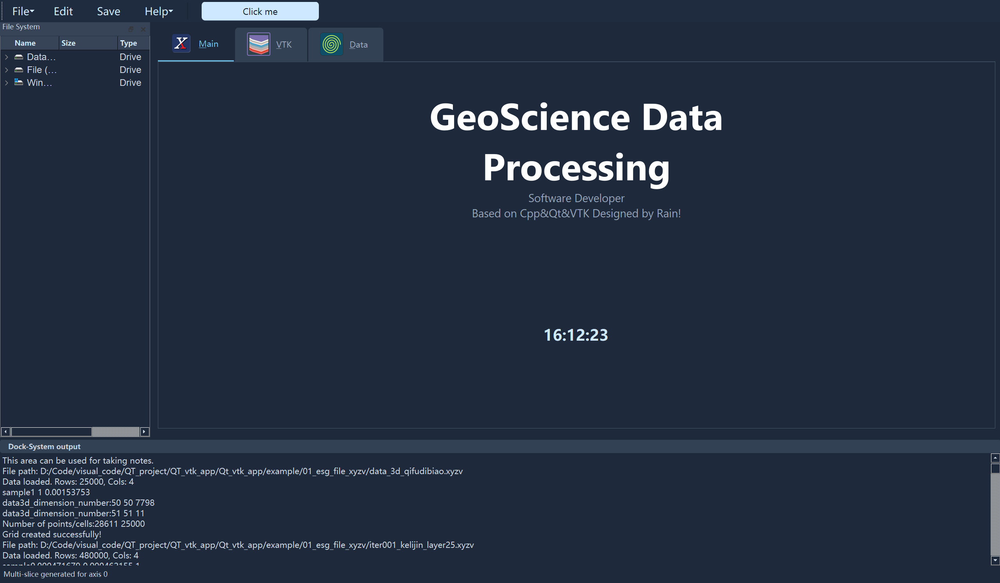
初始界面
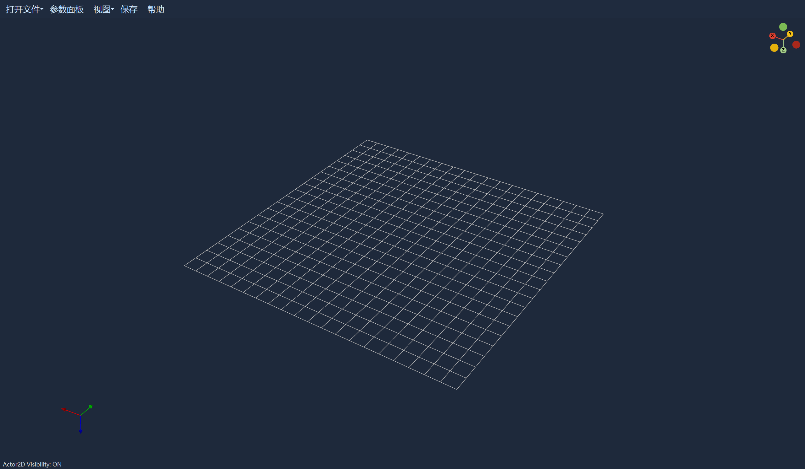
起伏地表模型
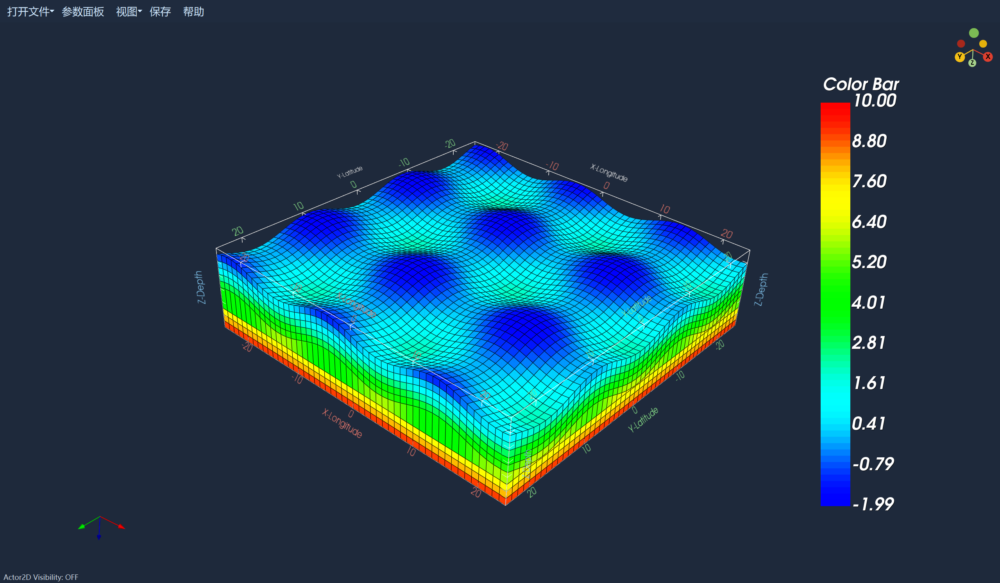
起伏地表模型规则化显示
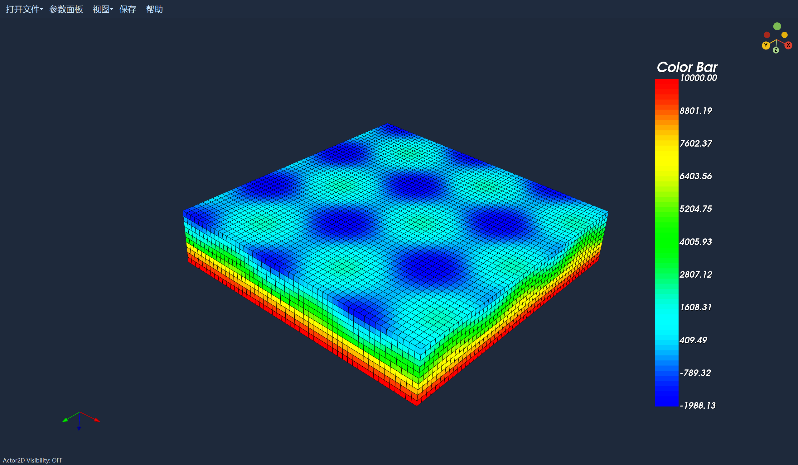
参数调整面板
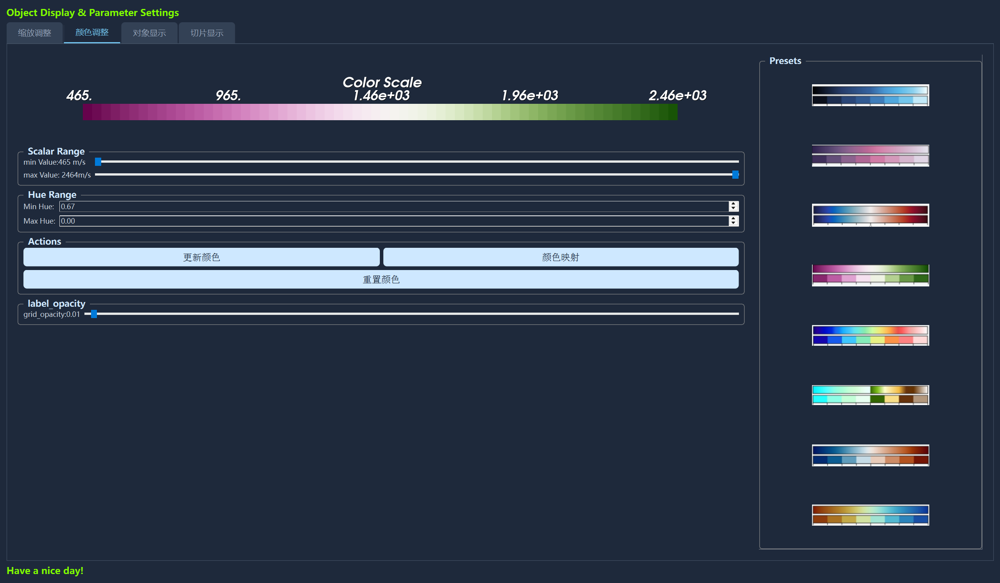
速度模型
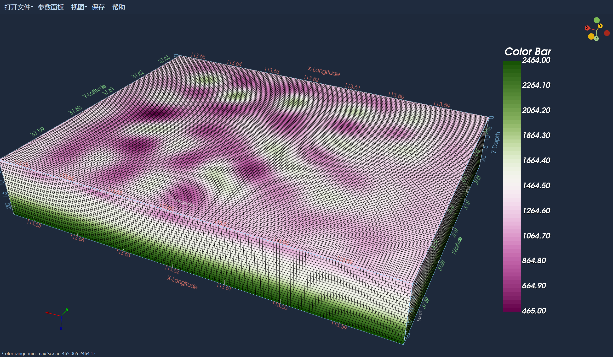
速度模型阈值显示1
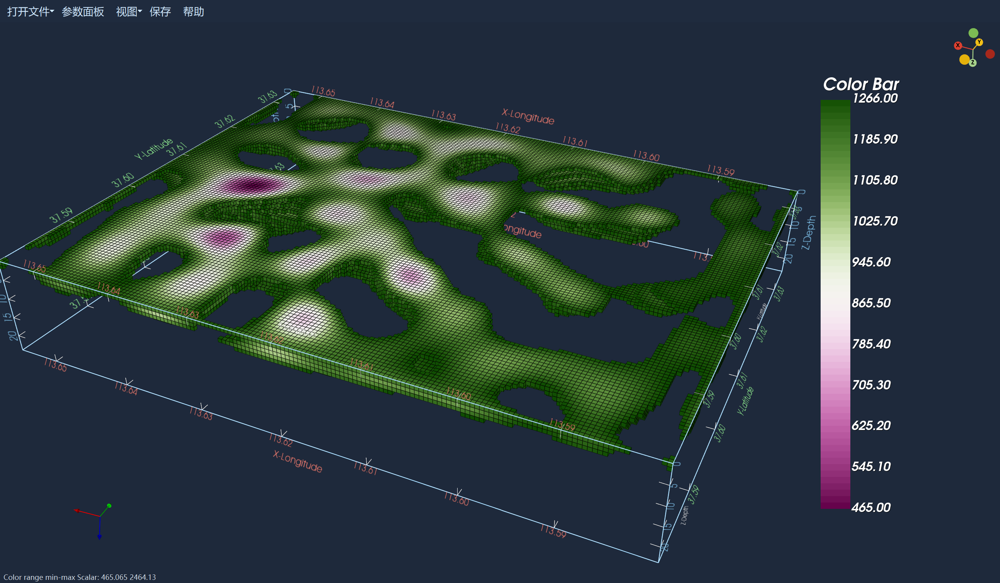
速度模型阈值显示2
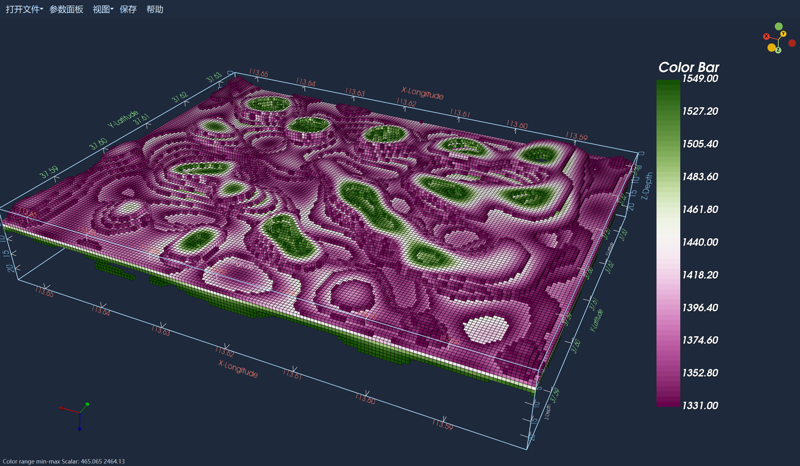
速度模型阈值显示3
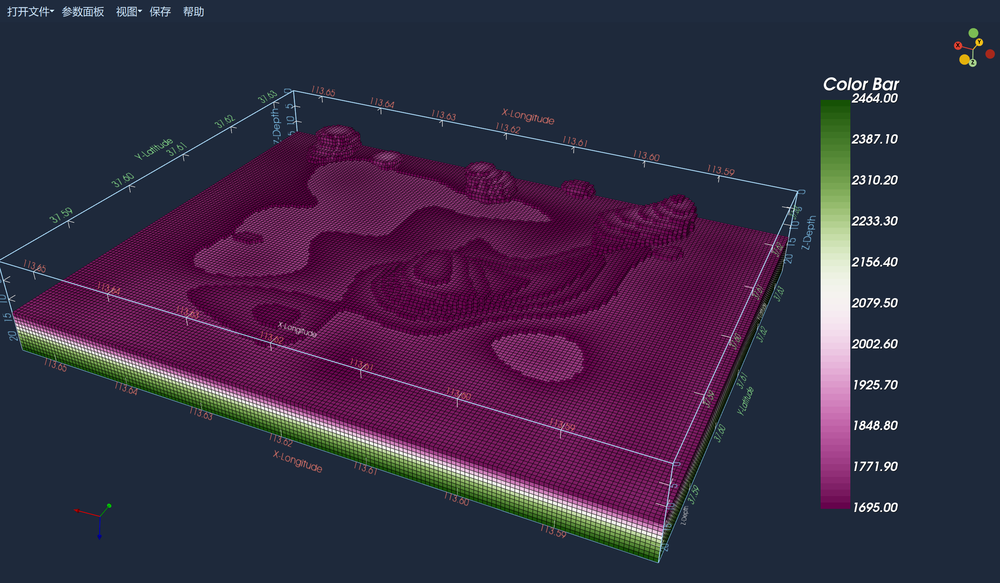
任意切片显示
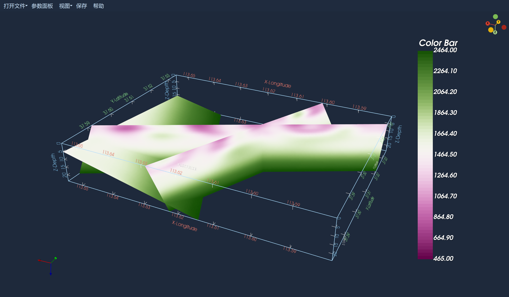
多切片显示3
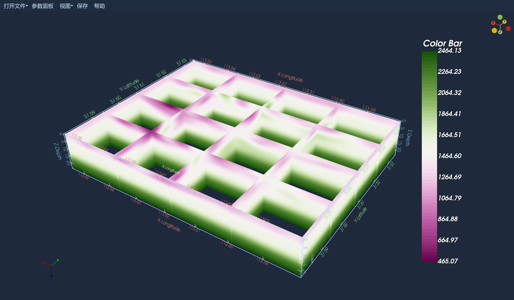
1. 模块概述 (Overview)
本模块是 Qt_VTK 系统的核心组件，基于 VTK 9.3 构建。它提供了一个高性能的交互式三维渲染窗口，专门用于展示地质勘探、气象数据及通用科学计算数据。
主要能力包括：
- 多源数据解析：支持点云、规则网格、非结构化网格及显式结构化网格 (ESG)。
- 体数据渲染：支持标量映射、阈值过滤及透明度控制。
- 切片分析：提供交互式三轴切片和任意平面切割功能。
- 场景交互：支持标准的鼠标交互、相机控制及辅助坐标显示。
2. 界面布局 (Interface Layout)
可视化窗口主要由以下几个部分组成：
3D 渲染主视图 (Main Viewport)：
- 占据窗口核心区域，显示三维模型。
- 左下角：固定坐标轴指示器 (Orientation Marker)，指示全局 XYZ 方向。
- 右上角：交互式相机导航器 (Camera Cube)，点击不同面可快速切换视角（如 Top, Front, Left）。
- 右侧：颜色标尺 (Scalar Bar)，显示数值与颜色的对应关系。
顶部工具栏 (Toolbar)：
打开文件：加载数据文件。参数面板：开启/隐藏侧边控制面板。视图：切换透视/正交投影，或复位视角。保存：截图保存当前渲染画面。帮助：显示操作说明。
底部状态栏 (Status Bar)：
- 实时显示当前操作状态、加载进度及错误提示。
3. 操作指南 (User Guide)
3.1 鼠标交互
- 左键拖拽：旋转模型 (Rotate)。
- 中键拖拽 / Shift + 左键：平移模型 (Pan)。
- 右键拖拽 / 滚轮滚动：缩放模型 (Zoom)。
- Ctrl + 左键：在切片模式下，用于旋转切片平面（视具体 Widget 而定）。
3.2 右键菜单 (Context Menu)
在渲染区域点击右键，可弹出快捷菜单：
- Color Settings：快速切换背景颜色或重置颜色映射。
- Toggle 2D Plane：显示/隐藏底部的基础参考网格。
- Scale Z：快速反转 Z 轴（针对某些深度为正的地质数据）。
- Clear Object：清空当前场景。
4. 参数调整面板 (Parameter Panel)
点击工具栏的 “参数面板” 按钮可打开侧边栏，包含四个核心选项卡：
4.1 缩放调整 (Scale & Camera)
用于处理地质数据中常见的 Z 轴压缩 问题。
- Model Scale (X/Y/Z)：设置各轴的缩放比例。
- 应用场景：地质数据的水平跨度通常为几千米，而深度只有几百米。将 Z 轴 Scale 设为 5.0 或 10.0 可夸张显示深度变化。
- Camera ViewUp：手动设置相机的“向上”向量，用于修正视角倾斜。
4.2 颜色调整 (Color Adjustment)
控制数值到颜色的映射关系。
- Scalar Range (Min/Max)：设置颜色映射的数值范围。
- 超出范围的数值将被钳位到两端颜色。
- Hue Range：调整色相范围（默认从蓝色到红色）。
- Global Opacity：调整整个网格的透明度（0~100%）。
- Color Presets：右侧提供预设颜色表（如
Rainbow,Jet,Seismic等），支持加载.cpt文件。
4.3 对象显示 (Object Display)
控制不同渲染图元的可见性。
- Point Cloud：以离散点形式显示数据。
- Outline：显示数据的外包围盒（Bounding Box）。
- Cube Axes：显示带刻度的三维坐标轴网格。
- Grid Options：
Cell <-> Point：切换渲染模式。Cell 模式显示原始网格格子（马赛克感）；Point 模式进行平滑插值渲染。Edge Line：显示/隐藏网格单元的边缘线。Threshold：开启阈值过滤，只显示特定数值范围内的数据（如只显示高波速区域）。
4.4 切片显示 (Slicing)
提供三种切片模式用于查看体数据内部：
- 任意切片 (Arbitrary Slice)：
- 输入
Origin(原点) 和Normal(法线方向)，点击 Add 生成切片。
- 输入
- 三轴交互切片 (Tri-axial Slice)：
- 勾选
clip-plane-X/Y/Z，场景中会出现交互式平面。 - 鼠标拖动平面边框可移动切片位置。
- 勾选
- 多重切片 (Multi-Slice)：
- 设定切片数量（如 10 层），点击
Show，自动沿指定轴向生成等间距切片组。
- 设定切片数量（如 10 层），点击
5. 支持的数据格式 (Supported Data Formats)
| 后缀名 | 类型 | 说明 |
|---|---|---|
| .xyzv | 自定义网格 | 文本格式。前4行头信息，第5行维度(Nx Ny Nz Nv)，后续为 x y z value 数据。程序会自动构建显式结构化网格。 |
| .vtk | VTK Legacy | 标准 VTK 格式，支持 StructuredPoints, PolyData, UnstructuredGrid。 |
| .ply | 多边形文件 | 常用于点云或表面网格存储，程序会自动根据 Z 值生成颜色标量。 |
| .dem / .tif | 数字高程 | 光栅高程数据，程序会自动转换为地形表面 (PolyData)。 |
| .iter / .txt | 离散点云 | 简单的点列表，程序将按点云方式渲染。 |
6. 技术实现细节 (Technical Details)
6.1 渲染管线 (Pipeline)
本模块采用了标准的 VTK 可视化管线设计：1
2
3
4
5
6
7
8
9graph LR
A[Source / Reader] --> B[Filter: Transform]
B --> C{Mode Selection}
C -->|Point Mode| D[Filter: CellDataToPointData]
C -->|Cell Mode| E[Pass Through]
D --> F[Mapper: DataSetMapper]
E --> F
F -->|LookupTable| G[Actor]
G --> H[Renderer]
6.2 显式结构化网格 (Explicit Structured Grid)
对于 .xyzv 数据，系统使用 vtkExplicitStructuredGrid 进行构建。
- 优势：既保留了结构化网格的拓扑关系（I, J, K 索引），又允许节点在空间中任意分布（非正交、起伏地表）。
- 实现：通过
GridUtils::CreateExplicitStructuredGrid算法，将一维的数据数组映射为三维的六面体（Hexahedron）单元集合。
6.3 内存与性能管理
- 懒加载 (Lazy Initialization)：参数面板、辅助窗口及大型 Filter 仅在首次使用时创建，减少启动内存占用。
- 智能指针：全面使用
vtkSmartPointer和vtkNew管理 VTK 对象生命周期，防止内存泄漏。 - 数据复用：切片操作中使用
SetInputData而非SetInputConnection断开临时 Filter 连接，实现“快照式”切片，防止管线冲突。
7. 常见问题 (FAQ)
Q: 打开文件后屏幕是黑的？
A: 请尝试以下操作：
- 点击工具栏的 视图 -> 透视/正交 切换一下投影方式。
- 滚动鼠标滚轮缩放，或者按
R键重置相机 (Reset Camera)。 - 检查参数面板中
Opacity是否被设为了 0。
Q: 为什么左下角的坐标轴不显示？
A: 这通常是因为渲染层级被覆盖。尝试稍微旋转一下视图，或者重新加载一次文件。系统已内置自动修复逻辑，会在场景更新时自动重启 Widget。
Q: .xyzv 文件加载失败？
A: 请检查文件头是否符合格式要求（前4行跳过，第5行为维度信息）。确保路径中不包含乱码字符（虽然程序已支持中文路径，但部分系统环境可能仍有兼容性问题）。